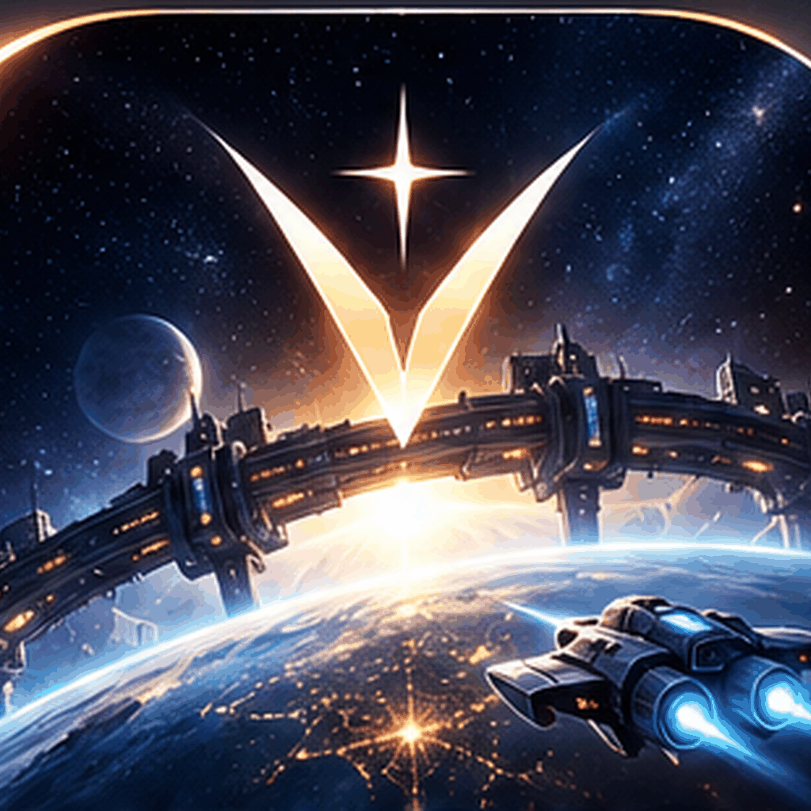

Kaynaklarını yönet
Metal, kristal, döteryum ve enerji dengesini gözeterek madenlerini ve tesislerini geliştir.

iPhone için galaktik strateji
Gezegenini geliştir, üretimini dengele, yeni teknolojiler araştır. Filolarını hazırla ve galaksinin bilinmeyen bölgelerine doğru yola çık.
Üretim, araştırma ve keşif kararların kendi uzay uygarlığını şekillendirir.
Metal, kristal, döteryum ve enerji dengesini gözeterek madenlerini ve tesislerini geliştir.
Yeni araştırmalarla keşif olanaklarını genişlet; tersaneni ve gemilerini geliştir.
Farklı gemileri bir araya getir, sektörleri keşfet ve karşılaşmaların sonuçlarına göre plan yap.
Oyunun dünyasından
Aşağıdaki görseller oyunun mevcut sistemlerini anlatan temsili tanıtım çizimleridir; uygulamadan alınmış gerçek ekran görüntüleri değildir.
Görseller temsilidir; gerçek iPhone ekran görüntüleri hazır olduğunda bu bölüm güncellenecektir.
Kendi hızında
Ana oyun çevrimdışı oynanır; kaynak üretimi ve zamanlı işlemler oyun kapalıyken de ilerler. İsteğe bağlı ödüllü reklamlar ve mağaza içerikleri temel oyun için zorunlu değildir.